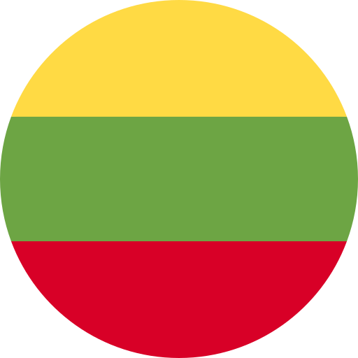

Un estudio exhaustivo de casos reveló que en los países socios MBAT como un concepto integral que combina la atención plena y la terapia artística bajo el mismo sistema no se está implementando. En su lugar, la atención plena y la terapia artística se utilizan como metodologías separadas en los países socios.
En Chipre, la terapia artística es una metodología popular. Solo en uno de los estudios de casos se intenta integrar la atención plena junto con la terapia artística.
En España, la atención plena es una metodología popular. Aunque en el tercer estudio de caso español se presentan los principios de MBAT, el término "MBAT" no se utiliza. Por lo tanto, podemos concluir que MBAT puede existir en España, pero las personas no utilizan el término "MBAT".
En Dinamarca, podemos encontrar la aplicación de la reducción del estrés basada en la atención plena (MBSR) tanto para la población joven como para la de mayor edad. Sin embargo, MBAT aún no es una metodología popular en Dinamarca.
En Lituania, las técnicas de atención plena y terapia artística se utilizan como metodologías separadas. Al igual que en la mayoría de los países participantes, en Lituania falta MBAT como una metodología conjunta de atención plena y terapia artística. Además, también podemos encontrar la aplicación de MBSR en Lituania.
En Turquía, la terapia artística es una metodología popular. A pesar de los esfuerzos en curso para integrarla en los servicios de rehabilitación en Turquía, MBAT aún no está completamente desarrollado. Este intento de desarrollo de MBAT se observa en el segundo estudio de caso de Turquía, donde se busca integrar los movimientos corporales (por ejemplo, movimientos de baile) con herramientas artísticas.
En Polonia, la terapia artística se utiliza como una metodología común entre los terapeutas. Aunque el área de aplicación de la terapia artística es limitada, MBAT no es ampliamente conocido en Polonia.
En resumen, las metodologías más utilizadas en los países socios son: